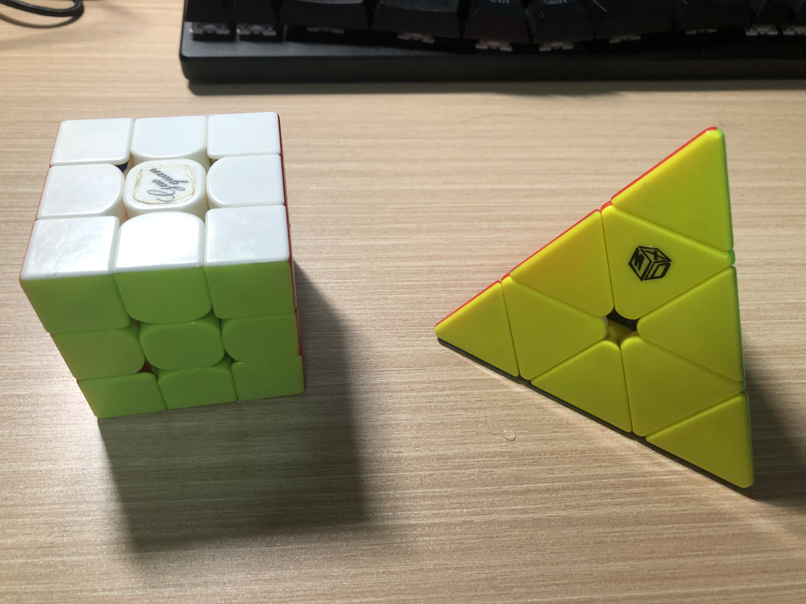

|
You can find me on WCA. There are recorded results in 3x3x3, 2x2x2, one-handed, pyramix, and skewb. I also play 4x4x4 and megaminx.
I play Rubik's cube the most frequently between 2015-2018, when Feliks Zemdegs was still the best guy in the world and Yi Wang was the best pyramix guy in China. The best rank I got was NR 13 in pyramix, along with a 2nd place in the same competition. I miss the internet at those times.
 Left: an old model of Yue Xiao. Right: Rin; used to be the best pyramix model.
I have never used